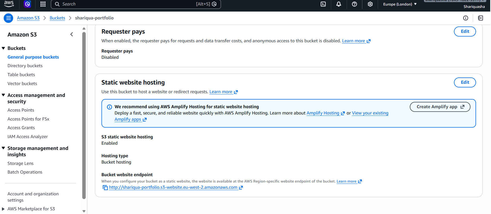
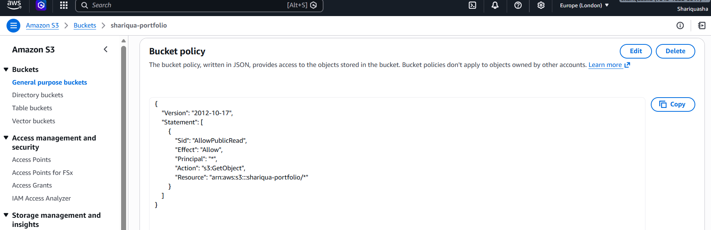
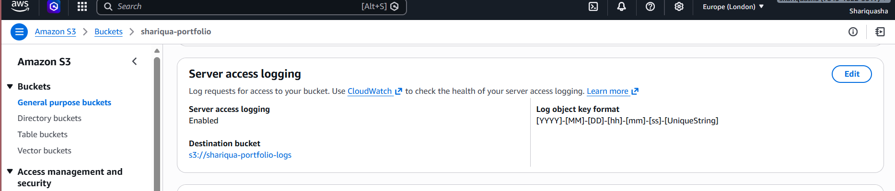
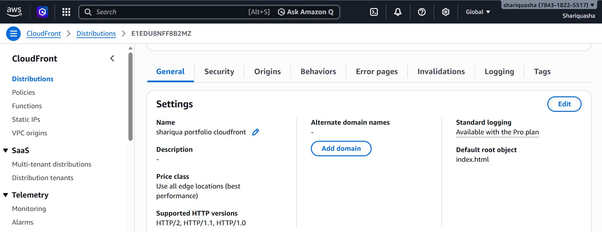
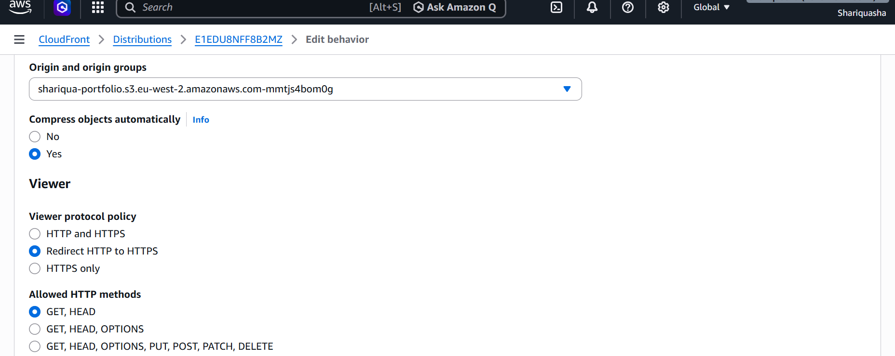
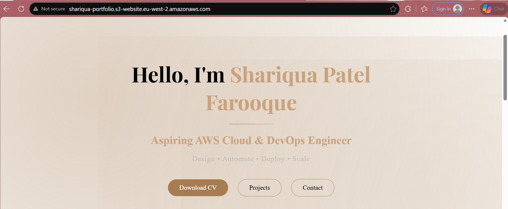
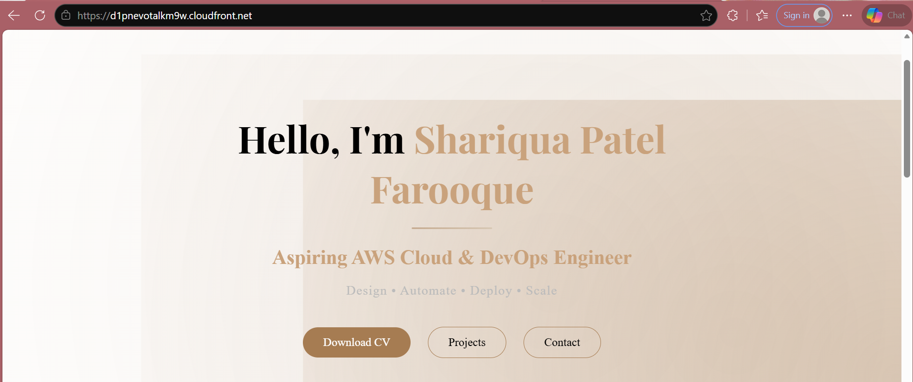

SHARIQUA PATEL FAROOQUE
DESIGN • AUTOMATE • DEPLOY • SCALE
Aspiring AWS Cloud & DevOps Engineer building hands-on projects in AWS, Linux, Git, CI/CD, Docker, Jenkins, Kubernetes, monitoring, and automation. I enjoy transforming technical learning into practical portfolio work with a clean, elegant, and professional presentation.
About Me
I am passionate about cloud technologies and DevOps practices. My focus is on learning by doing and building real projects that strengthen my practical skills in AWS, automation, Linux, CI/CD, and infrastructure concepts.
I am currently creating a professional cloud portfolio that reflects both my technical growth and my ability to present projects in a clean, structured, and polished way.
Core Learning Repositories
Cloud Hands-on Projects
Deployment Workflow Practice
Growing Practical Foundation
Learning Journey
SDLC, Agile, DevOps concepts, networking basics, Linux fundamentals, first commands, and directory structure.
Version control, Git commands, GitHub workflow, branching, merging, pull requests, and deployment practices.
Linux commands, sudo, networking, package management, users, permissions, shell scripting, cron jobs, and task automation.
Cloud concepts, AWS setup, IAM, EC2, S3, VPC, Lambda, SQS/SNS, CloudWatch, and CloudFormation.
Docker, Dockerfile, Docker Compose, containers vs VMs, and hands-on containerization examples.
Jenkins, Maven, CI/CD pipelines, GitHub and Docker integration, testing workflows, and deployment basics.
Prometheus, Grafana, monitoring dashboards, alerts, observability concepts, and best practices.
Kubernetes setup, pods, deployments, YAML, services, microservices architecture, and cloud Kubernetes basics.
Prompt engineering concepts, hands-on experiments, reusable prompt templates, and best practices for AI workflows.
Featured Projects
Portfolio website hosted on Amazon S3 with static website hosting, public access configuration, and cloud portfolio deployment practice.



Server access logging setup for request visibility, monitoring support, and analysis of traffic behavior across the hosting workflow.


CloudFront distribution configured for faster global delivery, improved content access, and secure website delivery workflow.
Homepage preview comparison between direct S3 website hosting and CloudFront delivery URL to observe deployment outcome.


Contact
You can reach me through the following platforms for portfolio viewing, networking, and professional connection.
shariquafarooque@gmail.com
github.com/shariquafarooque-sha
linkedin.com/in/shariqua-patel-28464a263